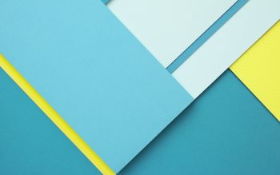

<!-- <ion-menu [content]="content">
  <ion-header>
    <ion-toolbar style="height:150px;" class="ion-toolbar">
      <ion-title style="margin-top: 30px">9052404240</ion-title>
      <p style="margin-left:15px">jani@easycloud.in</p> -->
      <!--  -->
    <!-- </ion-toolbar>
  </ion-header>

  <ion-content>
    <ion-list>
      <button menuClose ion-item *ngFor="let p of pages" style="font-size: 15px" (click)="openPage(p)">
          <ion-icon color="menuicon" item-start  style="font-size:20px;margin-right:1px" [name]="p.icon" > </ion-icon>
        {{p.title}}
      </button>
    </ion-list> -->
    <!-- <li class="divider"></li>
    <h2 class="subheading" style="margin-left:10px">Communication</h2>
    <ion-list>
        <button menuClose ion-item *ngFor="let p1 of pages1" style="font-size: 15px" (click)="openPage1(p1)">
            <ion-icon color="menuicon" item-start  style="font-size:20px;margin-right:1px" [name]="p1.icon" > </ion-icon>
          {{p1.title}}
        </button>
      </ion-list> 
  </ion-content>
</ion-menu> -->

<!-- Disable swipe-to-go-back because it's poor UX to combine STGB with side menus -->
<ion-nav [root]="rootPage" #content swipeBackEnabled="false"></ion-nav>